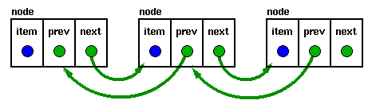

#include <stdio.h>
#include <stdlib.h>
#include <string.h>
struct address {
char name[30];
char street[40];
char city[20];
char state[3];
char zip[11];
struct address *next; /* pointer to next entry */
struct address *prior;
};
struct address *head=NULL; /* pointer to first entry in list */
struct address *info;
/* Select an operation. */
int menu_select(void)
{
char s[80];
int c;
printf("1. Enter a name at beginning\n");
printf("2. Enter a name at middle\n");
printf("3. Enter a name at end\n");
printf("4. Delete a name at beginning\n");
printf("5. Delete a name at middle\n");
printf("6. Delete a name at end\n");
printf("7. List the file\n");
printf("8. Search\n");
printf("9. Edit a name\n");
printf("10. Save the file\n");
printf("11. Load the file\n");
printf("12. Quit\n");
do {
printf("\nEnter your choice: ");
gets(s);
c = atoi(s);
} while(c<0 || c>12);
return c;
}
/* This function will input a string up to
the length in count and will prevent
the string from being overrun. It will also
display a prompting message. */
void inputs(char *prompt, char *s, int count)
{
char p[255];
do {
printf(prompt);
fgets(p, 254, stdin);
if(strlen(p) > count) printf("\nToo Long\n");
} while(strlen(p) > count);
p[strlen(p)-1] = 0; /* remove newline character */
strcpy(s, p);
}
/* Enter names and addresses. */
void enter(void)
{
// struct address *info;
if(!head)
{ head= NULL; /* initialize head */
}
info = (struct address *) calloc(1, sizeof(struct address));
if(!info) {
printf("\nout of memory");
return;
}
inputs("Enter name: ", info->name, 30);
inputs("Enter street: ", info->street, 40);
inputs("Enter city: ", info->city, 20);
inputs("Enter state: ", info->state, 3);
inputs("Enter zip: ", info->zip, 10);
//store(info,&head,&last);
} /* entry loop */
/* This function actually prints the fields in each address. */
void display(struct address *info)
{
printf("%s\n", info->name);
printf("%s\n", info->street);
printf("%s\n", info->city);
printf("%s\n", info->state);
printf("%s\n", info->zip);
printf("\n\n");
}
/* Find an address. */
struct address *find( char *name)
{
info = head;
while(info) {
if(!strcmp(name, info->name)) return info;
info = info->next; /* get next address */
}
printf("Name not found.\n");
return NULL; /* not found */
}
void begstore()
{
enter();
info->next=head;
info->prior=head;
head=info;
info->next->prior=head;
info->prior=NULL;
}
void midstore()
{
char s[80];
struct address *e; /* item to delete */
inputs("Enter name: ", s, 30);
e = find(s);
if(!e)
{
printf("Not Found\n");
return;
}
else display(e);
enter();
info->prior=e;
info->next=e->next;
e->next=info;
e->next->prior=info;
}
void endstore()
{
struct address *current;
enter();
current=head;
while(current->next!=NULL)
{
current=current->next;
}
current->next=info;
info->next=NULL;
info->prior=current;
}
/* Display the entire list. */
void list(void)
{
info=head;
while(info) {
display(info);
getch();
info = info->next; /* get next address */
}
}
/* Look for a name in the list. */
void search(void)
{
char name[40];
struct address *info;
printf("Enter name to find: ");
gets(name);
info = find(name);
if(!info) printf("Not Found\n");
else display(info);
}
/* Save the file to disk. */
void save(void)
{
FILE *fp;
fp = fopen("mlist.dat", "wb");
if(!fp) {
printf("Cannot open file.\n");
exit(1);
}
printf("\nSaving File\n");
info = head;
while(info) {
fwrite(info, sizeof(struct address), 1, fp);
info = info->next; /* get next address */
}
fclose(fp);
}
/* Load the address file. */
void load()
{
struct address *current;
FILE *fp;
fp = fopen("mlist.dat", "rb");
if(!fp) {
printf("Cannot open file.\n");
exit(1);
}
/* free any previously allocated memory */
while(head) {
info = head->next;
free(info);
head = info;
}
/* reset top pointers */
head=NULL;
printf("\nLoading File\n");
while(!feof(fp)) {
info = (struct address *) malloc(sizeof(struct address));
if(!info) {
printf("Out of Memory");
return;
}
if(1 != fread(info, sizeof(struct address), 1, fp)) break;
if(!head)
{
info->next=head;
head=info;
}
else
{
current=head;
while(current->next!=NULL)
{
current=current->next;
}
current->next=info;
info->next=NULL;
}
}
fclose(fp);
}
void fdelete() /* end of list */
{
free(head);
head=head->next;
}
void ldelete() /* end of list */
{
struct address *p1,*p2; /* previous item */
p1=head;
p2=p1->next;
while(p2!=NULL && p2->next!=NULL)
{
p1=p2;
p2=p1->next;
}
free(p1->next);
p1->next=NULL;
p1->prior=NULL;
if (p2==NULL)
{
head=NULL;
}
}
void mdelete() /* end of list */
{
char s[80];
struct address *p1,*p2; /* previous item */
struct address *i; /* item to delete */
inputs("Enter name: ", s, 30);
i = find(s);
if(!i)
{
printf("Not Found\n");
return;
}
else display(i);
p1=head;
p2=p1->next;
while(p2->next!=NULL)
{
if (p1->next==i)
{
free(p1->next);
p1->next=i->next;
i->next->prior=p1;
i->prior=NULL;
i->next=NULL;
}
p1=p2;
p2=p1->next;
}
}
void edit()
{
char s[80];
struct address *e; /* item to delete */
inputs("Enter name: ", s, 30);
e = find(s);
if(!e)
{
printf("Not Found\n");
return;
}
else display(e);
inputs("Enter name: ", e->name, 30);
inputs("Enter street: ", e->street, 40);
inputs("Enter city: ", e->city, 20);
inputs("Enter state: ", e->state, 3);
inputs("Enter zip: ", e->zip, 10);
}
void main(void)
{
clrscr();
for(;;) {
switch(menu_select()) {
case 1:begstore(); /* enter an address */
break;
case 2:midstore(); /* enter an address */
break;
case 3:endstore(); /* enter an address */
break;
case 4:fdelete(); /* remove an address */
break;
case 5:mdelete(); /* display the list */
break;
case 6:ldelete(); /* find an address */
break;
case 7:list(); /* display the list */
break;
case 8: search(); /* find an address */
break;
case 9: edit(); /* save list to disk */
break;
case 10:save(); /* read from disk */
break;
case 11:load();
break;
case 12:exit(0);
}
}
}